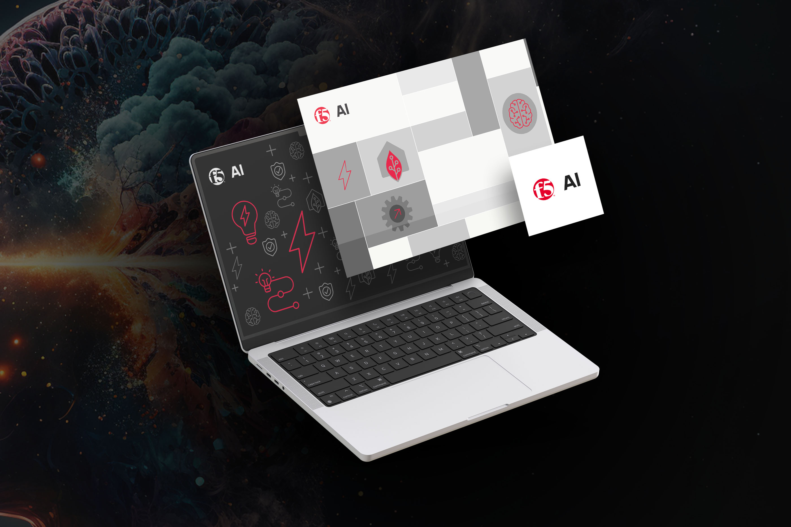
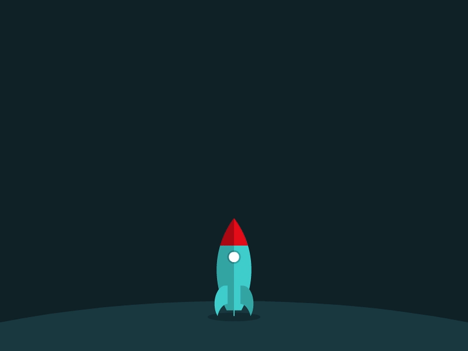
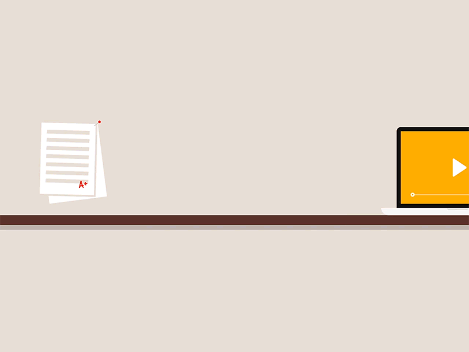

feda fitian
work
about
resume & contact
linkedin
feda fitian
Hi! I’m Feda.
I’m a cat lover professional based out of Seattle.
Scroll down to see my work!
Innovation Programs

AI Program and Products
Customer Programs

Product Delivery
Software Engineering
Executive Operations and Strategy

Curriculum Development
Building Community and Inclusion